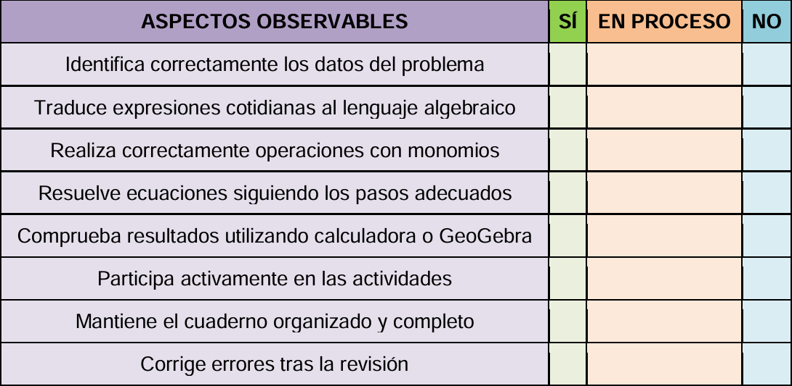
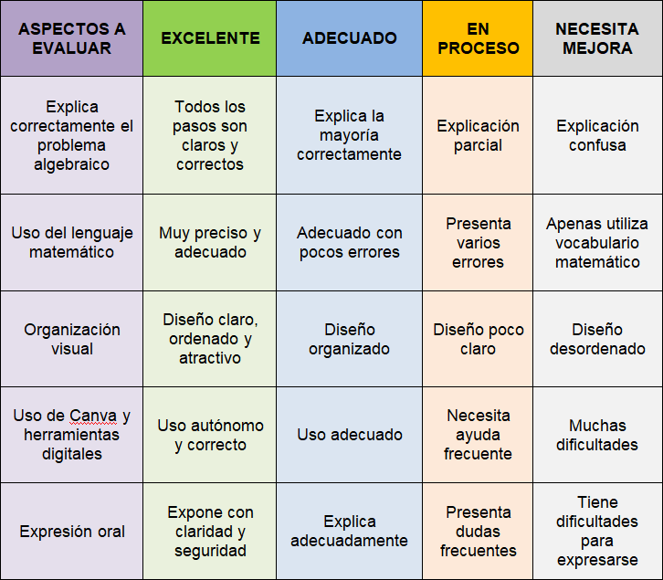

Criterios de evaluación asociados a las actividades
| TAREA | CRITERIO DE EVALUACIÓN | AGRUPAMIENTO | TIEMPO APROXIMADO | HERRAMIENTA |
|
Introducción al lenguaje algebraico mediante vídeos y ejemplos sencillos. Traducción de expresiones cotidianas al lenguaje algebraico. |
1.1. Iniciarse en la interpretación de problemas matemáticos sencillos, reconociendo los datos dados, estableciendo relaciones entre ellos y comprendiendo las preguntas formuladas. |
Individual y parejas | 1 sesión | Padlet con vídeos y recursos digitales |
|
Identificación de monomios y realización de operaciones básicas (suma, resta, multiplicación y división de monomios). |
3.1. Formular y comprobar conjeturas sencillas trabajando de forma individual o colectiva mediante patrones y relaciones matemáticas. |
Parejas | 1 sesión | Padlet con vídeos y recursos digitales |
|
Resolución guiada de ecuaciones de primer grado sencillas utilizando estrategias paso a paso. |
1.2. Aplicar herramientas y estrategias apropiadas, como el tanteo o la descomposición en problemas más sencillos, para resolver problemas cercanos. | Individual y parejas | 1 sesión |
Padlet con vídeos y recursos digitales |
|
Resolución de problemas mediante ecuaciones y puesta en común de resultados en parejas. |
4.2. Modelizar situaciones del entorno cercano y resolver problemas sencillos interpretando y modificando algoritmos y modelos matemáticos. |
Individual y parejas | 1 sesión | Padlet y recursos digitales |
|
Comprobación de resultados utilizando calculadora y corrección razonada de ejercicios algebraicos. |
2.1. Comprobar de forma razonada la corrección de las soluciones utilizando herramientas digitales como calculadoras o programas específicos. | Individual y parejas | 1 sesión | Calculadora digital y GeoGebra |
|
Elaboración del producto final en Canva: presentación o infografía explicando un problema algebraico resuelto paso a paso. |
7.1. Representar conceptos, procedimientos y resultados matemáticos usando herramientas digitales adecuadas para visualizar ideas y compartir información. | Pequeños grupos | 1 sesión | Canva |
|
Preparación de exposiciones orales organizando ideas, ensayando la explicación del procedimiento matemático y revisando cooperativamente los trabajos realizados. |
8.1. Comunicar ideas, conceptos y procesos matemáticos utilizando lenguaje matemático apropiado y diferentes medios digitales y orales. | Pequeños grupos | 1 sesión | Canva |
|
Exposición oral de los productos finales explicando el procedimiento seguido y las soluciones obtenidas. |
8.1. Comunicar ideas, conceptos y procesos matemáticos utilizando lenguaje matemático apropiado y diferentes medios digitales y orales. | Grupo clase | 1 sesión | Canva |
|
Reflexión final y autoevaluación sobre el aprendizaje, las dificultades encontradas y el trabajo cooperativo realizado. |
9.1. Gestionar las emociones propias y desarrollar el autoconcepto matemático generando expectativas positivas ante los retos matemáticos. | Individual |
1 sesión | Google Forms |
Instrumentos de evaluación
Instrumento 1. Lista de cotejo para actividades y trabajo diario

Instrumento 2. Rúbrica de la presentación en Canva

Instrumento 3. Cuestionario de autoevaluación final